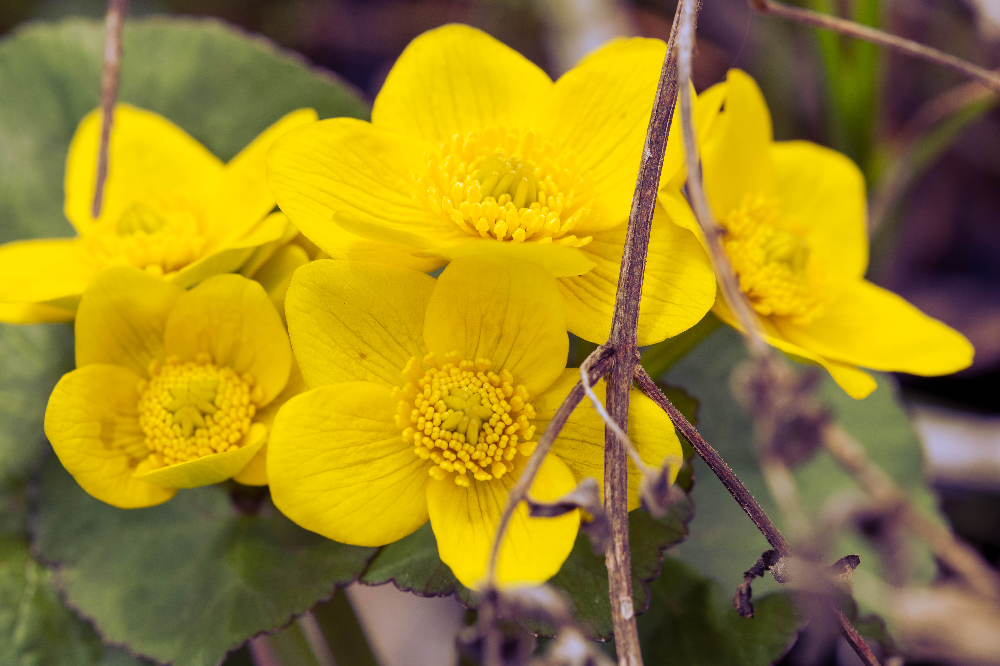
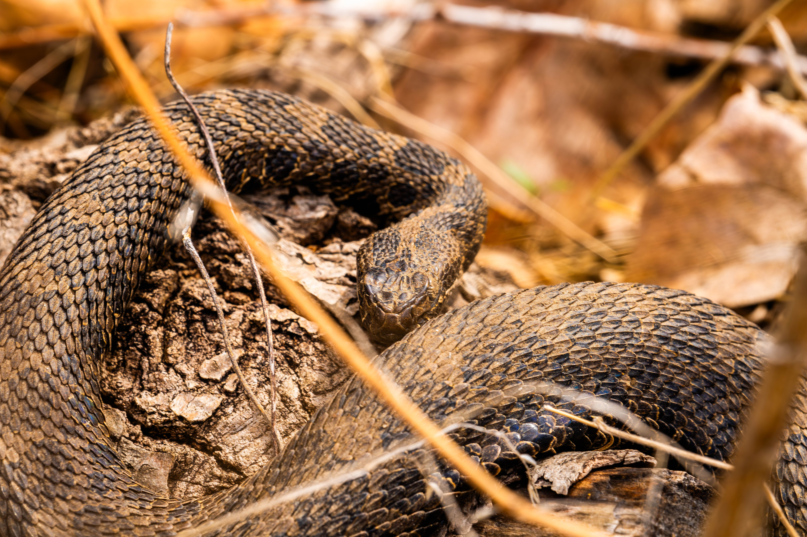
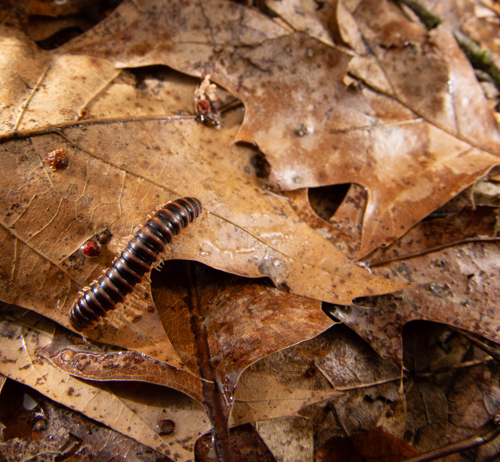
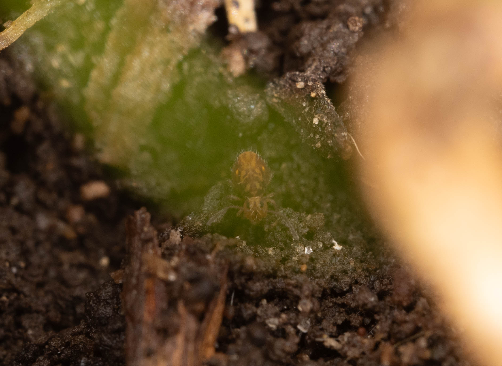
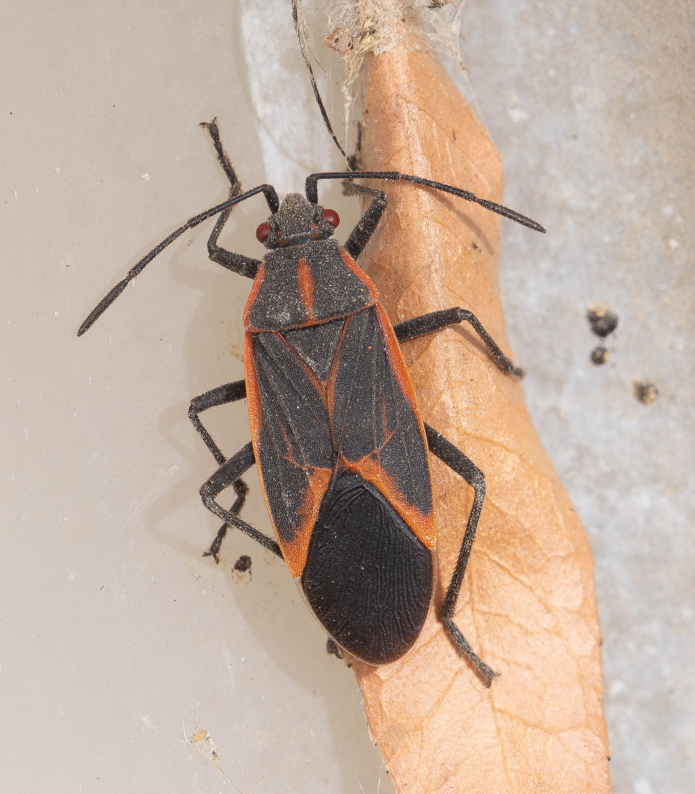

Some fun at Matthaei
by Yun Park
04/12/26
I had the amazing opportunity of visiting Matthaei Botanical Gardens today, on a walk for the Entomology Club. Despite low attendance, we were greatly rewarded for our persistence.

First-up were these beautiful Caltha palustris, the Marsh Marigolds. At first I was alarmed, thinking that it was their invasive lookalike, Europe's Lesser Celandine. Thankfully, the spacing between each bundle of plants and the less numerous ray florets helped me identify them as the natives.
As you may have surmised from the specific epithet palustris - "of wetland", Matthaei has some wetland habitat! That allows it to play host to the endangered and truly awesome Eastern Massasauga.
We had the good fortune of seeing one basking in the... air? There wasn't much sun out. It was draped over a log in extraordinary camouflage, spotted only by the keen eyes of one of our members.

Stay tuned for later in the season, when we revisit Matthaei for some of its rarities hidden deep within the fen!
Arb Strats
by Yun Park
04/08/26
In early spring, Nichols Arboretum is awfully quiet. The spring ephemerals are slowly waking up, and they pay our impatience no mind. Thankfully, the insects have already come out to entertain those who know where to look.
My first recommendation is going to seem odd to those of you versed in ecology. I seriously encourage bug-seekers to look underneath the leaves of the Great Smoky Mountain transplants, namely Great Rhododendron and Mountain Laurel. These hardy shrubs give numerous creatures vast swaths of unchanging cover, from jumping spiders to fellows like this Blackberry Psyllid.

The reason why I say this is odd is because non-native plants generally don't have the same connections with local wildlife as native plants, due to their alien status. So, in theory, this introduced greenery would be the last place you'd look.
Another recommendation of mine is to both peel bark from decayed logs as well as flip them over (in as unobtrusive a manner as possible, of course). Here are a few finds I've gotten with both methods.


In any case, the best thing you can do to find insects is to go out! Happy hunting!
The Landlord Special
by Yun Park
04/01/26
Usually, finding bugs in your apartment building is a bad thing. Well, I'm happy to report that most of the bugs I've found around mine were outside. My building's bottom floor consists of numerous columns, each with their own light (to attract insects, of course!). Here are some of the things I've come across while mindlessly walking around them!

The boxelder bug is not rare by any means, nor particularly loved for its habit of crowding up inside walls when it gets cold out, but I still love the striking black and orange color scheme.
Jumping spiders are also a common find for me, although it does take some time for them to come out. This one is the Dimorphic Jumping Spider, with little pops of orange to complement the mottled beige and brown. Finding predators like these is a good sign, since it usually means that prey is bound to be abundant.
For all that I love about insects and macro photography, I have to admit that seeing a fly in detail is still rather unpleasant. I don't enjoy the stiff, bristly hairs nor the unaesthetic color scheme. Something about the eyes are quite mesmerizing though, which are especially prevalent in the fly's design. Something tells me we aren't all that appealing to them, either.
Arachnomania!
by Yun Park
03/30/26
I didn't always love spiders. That is, until I found Rose's Spiders of North America and Bradley's Common Spiders of North America, both fantastic identification guides. Bradley's in particular does not shy away from the spider as a creature, doing anything but abstracting it from what makes it so feared- that being, the alien design. Eight eyes have never looked so good as they do when drawn by Steve Buchanan, Bradley's illustrator. Each plate manages an intensely mysterious, yet awesome tribute to our ancient friends.

That allows for a brief retrospect and review of the field guides I've used in the past. I was never into nature as a teen, nor even as a kid. That all changed when I decided that it would be cool if I knew every bird call I could hear on a walk in Michigan. I bought Peterson's Field Guide to Birds of North America, and ever since, I've been self-taught in identification of 5+ major groups of organisms, from mushrooms to sweat bees, all thanks to North America's excellent and diverse field guide industry.

And a huge shout-out to the community over on iNaturalist, which lets myself and other amateurs connect regularly with actual career scientists for the benefit of all. It's a good time to be a North American naturalist.